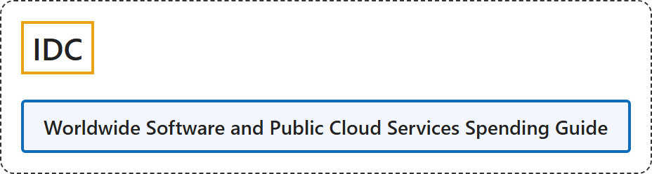

3. IDC
Classification

Glossary
| Term | Definition | 中文翻译 | Source |
|---|---|---|---|
| IDC 国际数据公司 |
"Building a world where the most trusted technology intelligence makes everyone better at what they do." | 建设一个让最值得信赖的技术情报使每个人都更擅长自己工作的世界。 | IDC, n.d., "We are the tech intelligence layer of the AI economy" section, para. 1 |
| Worldwide Software and Public Cloud Services Spending Guide 全球软件与公有云服务支出指南 |
"The IDC Worldwide Software and Public Cloud Services Spending Guide quantifies public cloud computing purchases by cloud type for 28 industries and 8 company sizes across 53 countries." | IDC 全球软件与公有云服务支出指南按云类型量化公有云计算采购，覆盖 53 个国家的 28 个行业和 8 种企业规模。 | IDC, 2026, "About IDC's Worldwide Public Cloud Services Spending Guide" section, para. 1 |
Timeline
| Date | Report | Scope | Key figures | Source |
|---|---|---|---|---|
| 2026-03-04 | Spending Guide update: worldwide forecast 2026 to 2029 | "quantifies public cloud computing purchases by cloud type for 28 industries and 8 company sizes across 53 countries" |
|
IDC, 2026, para. 1, "Global Public Cloud Market at a Glance", "SaaS Anchors Market Scale" and "PaaS Fuels Growth Momentum" sections |
| 2025-07-31 | Spending Guide update: Europe 2025 to 2029 | Public cloud services spending in Europe |
|
IDC, 2025c, paras. 1 and 2 |
| 2025-03-05 | Spending Guide update: Asia/Pacific 2025 to 2028 | Public cloud services spending in Asia/Pacific | "the Asia/Pacific market is expected to reach USD $250 Billion by 2025 and grow at a steady pace of 14.2% CAGR by 2028" | IDC, 2025b, para. 1 |
| 2025-02-13 | Spending Guide update: Europe 2025 to 2028 | Public cloud services spending in Europe | "public cloud services spending in Europe will total $221 billion in 2025 and will reach $373 billion by 2028, recording a five-year (2023-2028) compound annual growth rate (CAGR) of 20%." | IDC, 2025a, para. 1 |
| 2024-07-29 | Spending Guide update: worldwide forecast 2024 to 2028 | "quantifies public cloud services spending by cloud type for 28 industries and eight company sizes across nine regions and 53 countries." |
|
IDC, 2024, paras. 1, 2 and 6 |
References
IDC. (2024, July 29). Worldwide spending on public cloud services is forecast to double between 2024 and 2028, according to new IDC spending guide [Press release]. https://www.idc.com/resource-center/press-releases/worldwide-spending-on-public-cloud-services-is-forecast-to-double-between-2024-and-2028-according-to-new-idc-spending-guide/
IDC. (2025a, February 13). Banking leads European cloud spending growth while manufacturing industries slow down, says IDC [Press release]. https://www.idc.com/resource-center/press-releases/banking-leads-european-cloud-spending-growth-while-manufacturing-industries-slow-down-says-idc/
IDC. (2025b, March 5). Asia/Pacific public cloud services to reach US$250 billion by 2025, according to IDC [Press release]. https://www.idc.com/resource-center/press-releases/asia-pacific-public-cloud-services-to-reach-us250-billion-by-2025-according-to-idc/
IDC. (2025c, July 31). European public cloud spending holds strong amid U.S. tariffs, driven by finance, healthcare, and software and information services [Press release]. https://www.idc.com/resource-center/press-releases/european-public-cloud-spending-holds-strong-amid-u-s-tariffs-driven-by-finance-healthcare-and-software-and-information-services/
IDC. (2026, March 4). Global public cloud spending to surpass $1 trillion in 2026, driven by PaaS and AI platform adoption [Press release]. https://www.idc.com/resource-center/press-releases/publiccloudspend2026/
IDC. (n.d.). About IDC. Retrieved November 3, 2026, from https://www.idc.com/about/